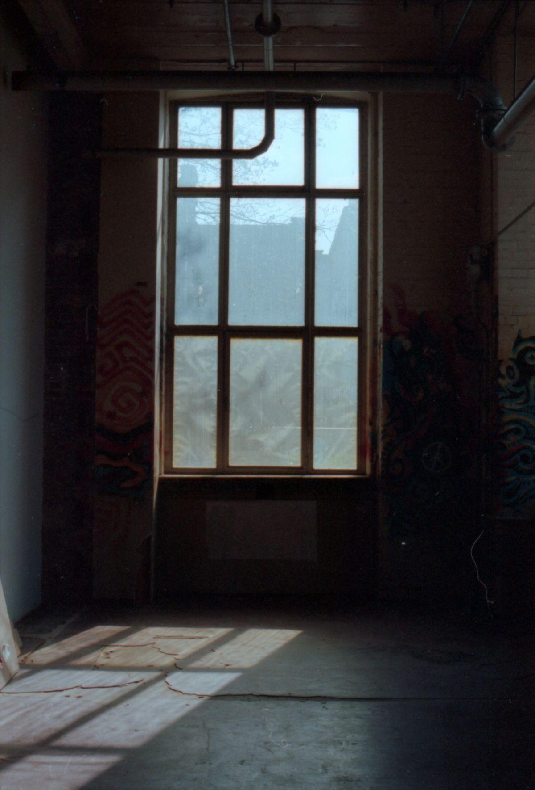
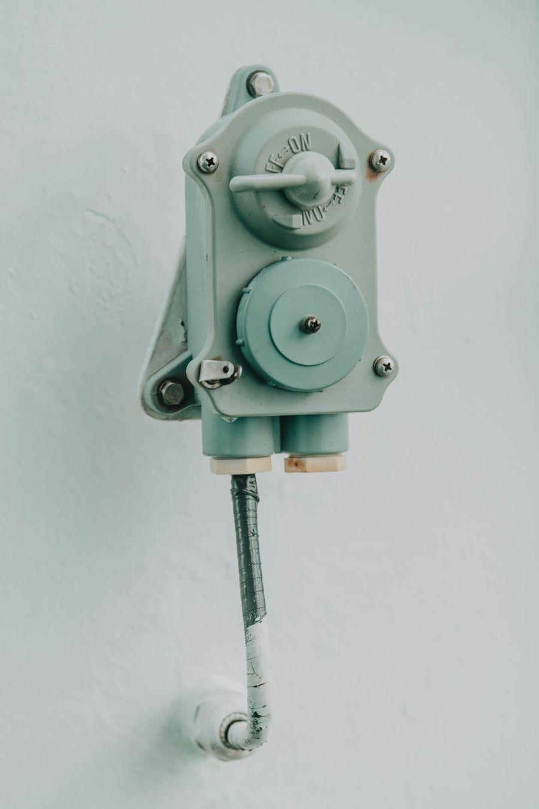
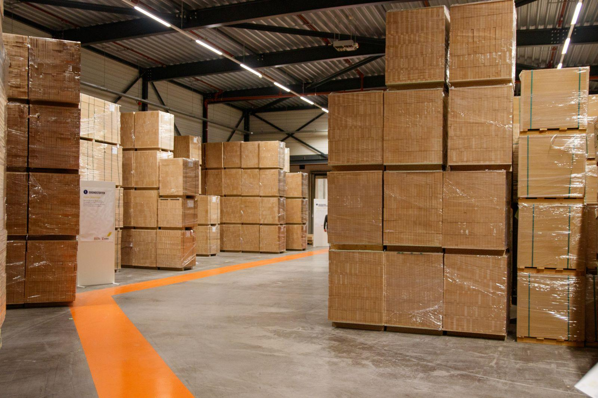
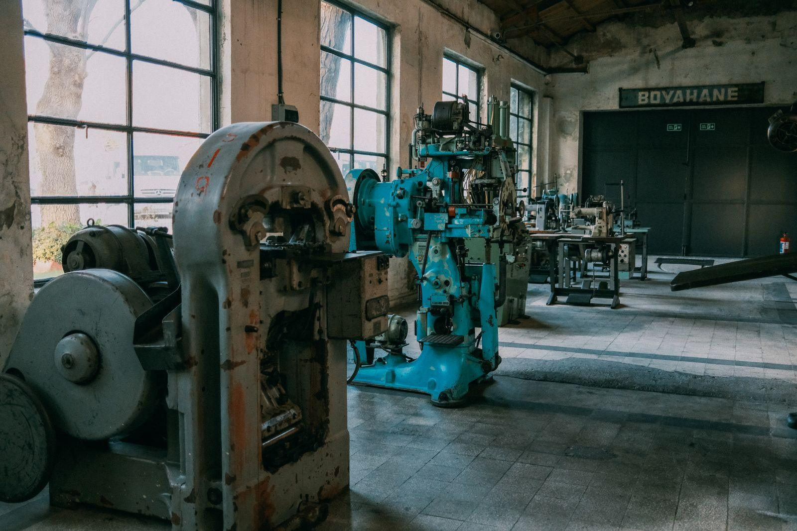

Meridian Conseil · démonstration, données 100 % fictivesMeridian
Conseil en stratégie climat
Votre trajectoire climat, chiffrée et tenable
Un accompagnement pas à pas pour transformer votre obligation réglementaire en avantage compétitif
Sommaire
Meridian Conseil · données fictivesMeridian
Aujourd'hui, avec vous
Quatre temps, puis vos questions
01Le constatOù en êtes-vous vraiment
02La méthodeNotre cadre SEVE, éprouvé sur le terrain
03Le planLots, budget, calendrier
04La décisionProchaines étapes concrètes
Chapitre · Le constat
Meridian Conseil · données fictivesMeridian
Chapitre 01
Le constat
Trois angles morts qui reviennent chez la plupart des entreprises de taille intermédiaire que nous rencontrons
Le constat
Meridian Conseil · données fictivesMeridian
Ce que nous observons
Trois angles morts, un même risque
01
Des données éparses
Consommations, achats, déplacements : chaque service tient son fichier, personne ne consolide.
02
Une réglementation qui accélère
Reporting extra-financier, devoir de vigilance, appels d'offres : les exigences arrivent plus vite que les process.
03
Des équipes seules
Un référent motivé, sans mandat clair ni budget, porte le sujet à bout de bras.
Résultats observés
Meridian Conseil · données fictivesMeridian
Ce que produit la démarche
Des résultats qui se mesurent
-24 %
d'émissions en moyenne au bout de 24 mois d'accompagnement
12
sites industriels audités sur la dernière mission type
×3
de vitesse de consolidation du reporting annuel
96 %
des plans d'action encore actifs un an après la mission
Le marché
Meridian Conseil · données fictivesMeridian
Une proportion, pas un camembert
La plupart avancent encore sans trajectoire
68 %
des entreprises de taille intermédiaire interrogées dans notre panel fictif n'ont pas de trajectoire carbone chiffrée. Chaque point représente une entreprise du panel.
La preuve
Meridian Conseil · données fictivesMeridian
Cas type, industrie, 900 salariés
-38 %
d'émissions de CO₂e en trois ans, sans baisse de production, chez un industriel fictif de notre panel
La question stratégique
Meridian Conseil · données fictivesMeridian
Le bon point de départ
La vraie question n'est pas « combien ça coûte » mais « ce que coûte d'attendre »
Notre conviction
Meridian Conseil · données fictivesMeridian
Mesurer moins. Transformer davantage.
Claire Fontaine · associée fondatrice, Meridian Conseil (personne fictive)
La démarche
Meridian Conseil · données fictivesMeridian
Trois lots, engagement pas à pas
D'abord mesurer, ensuite décider
Phase 0
Cadrage et lancement
Langage commun, accès aux données, gouvernance de la mission, jalons partagés.
Lot 1
Bilan carbone complet
Trois périmètres d'émissions, collecte outillée, restitution par site et par poste.
Lot 2
Trajectoire de réduction
Objectifs chiffrés, plan d'action priorisé, arbitrages investissement contre gain.
Notre différenciant · Cadre SEVE
Meridian Conseil · données fictivesMeridian
Une méthode, quatre lettres
SEVE, notre cadre de transition mesurée
S
Sonder
Mesurer les flux réels : énergie, achats, mobilité, immobilisations.
E
Évaluer
Prioriser chaque poste par impact, coût et faisabilité.
V
Viser
Fixer une trajectoire chiffrée, datée, validée en comité de direction.
E
Engager
Embarquer équipes et fournisseurs, mesurer, itérer chaque trimestre.
Cadre méthodologique fictif présenté à titre d'exemple de layout, aucune source réelle
Priorisation
Meridian Conseil · données fictivesMeridian
Impact contre faisabilité
Quatre chantiers, un ordre évident
FaisabilitéImpact
Sobriété énergétique des sites
Électrification de la flotte
Achats responsables
Captation carbone
· Le quadrant supérieur droit concentre les gains rapides : on commence là
· Les chantiers à fort impact mais faible faisabilité passent en étude
· Le reste attend la deuxième vague, sans culpabilité
Livrable : matrice de priorisation validée avec votre comité.
Clarification
Meridian Conseil · données fictivesMeridian
Deux familles de projets souvent confondues
Les distinguer, c'est déjà décider
A · Réduction directe
B · Contribution carbone
La question
« Comment émettre moins, dès cette année ? »
« Comment traiter ce qui ne peut pas être réduit ? »
Exemple type
Rénovation énergétique des 12 sites, sobriété des usages
Chaque année, trois semaines de collecte manuelle pour produire un chiffre que personne ne conteste ni n'utilise. Le sujet reste un coût, jamais un levier.
→
La solution
Un pilotage choisi
Une consolidation continue, des chiffres tracés, et un comité qui arbitre chaque trimestre sur des données fraîches. Le même effort, déplacé au bon endroit.
L'arbitrage
Meridian Conseil · données fictivesMeridian
Internaliser ou accompagner
Les deux options, sans angle mort
Pour l'accompagnement
Premier bilan livré en douze semaines, pas en douze mois
Méthode éprouvée, erreurs classiques évitées
Montée en compétence des équipes incluse
Ce que ça implique
Un budget dédié dès cette année
Du temps d'équipe mobilisé pendant la collecte
Un référent interne à nommer avant le kick-off
Notre position, l'accompagnement se justifie si le premier bilan doit sortir avant un an, sinon internalisez.
Vos questions
Meridian Conseil · données fictivesMeridian
Les quatre questions qui reviennent
Autant y répondre tout de suite
Combien de temps d'équipe faut-il prévoir ?
Environ deux jours par site pour la collecte initiale, puis une heure par mois pour le suivi en rythme de croisière.
Nos données sont-elles suffisantes ?
Toujours, pour démarrer. La Phase 0 identifie les trous et les proxys acceptables, documentés dans le rapport.
Que se passe-t-il après la mission ?
Vos référents formés reprennent la main, avec le portail et les rituels installés. Nous restons en appui optionnel.
Et si les résultats déçoivent ?
Chaque lot se termine par un point de décision : vous pouvez arrêter, ajuster ou continuer, sans engagement de suite.
Êtes-vous prêts
Meridian Conseil · données fictivesMeridian
Auto-diagnostic en cinq points
Ce qu'il faut avoir avant de signer
Un sponsor au comité de directionSans mandat clair, la collecte s'enlise au deuxième site
Un référent interne identifiéDeux jours par mois pendant la mission
L'accès aux factures d'énergieLe socle minimal de la Phase 0
Un historique d'achats consolidéUtile mais non bloquant : des proxys existent
Une trajectoire déjà chiffréeC'est justement l'objet de la mission
Parole de client
Meridian Conseil · données fictivesMeridian
Ils l'ont vécu
HR
Hélène RivièreDirectrice industrielle · groupe fictif, 900 salariés
« On pensait acheter un bilan carbone. On a récupéré une manière de décider qui nous sert bien au-delà du climat »
Verbatim fictif de démonstration, mission type 2025
Vocabulaire commun
Meridian Conseil · données fictivesMeridian
Le mot qui change la discussion
Trajectoire
nom féminin · à distinguer de « bilan », qui photographie sans engager
1.Suite d'objectifs chiffrés et datés, validée en comité de direction, reliant la situation mesurée à l'ambition affichée
2.Par extension : l'outil de pilotage qui rend chaque écart visible, discutable et arbitrable en cours d'année
Les données · répartition par poste
Meridian Conseil · données fictivesMeridian
Comparer des catégories
Un poste écrase tous les autres
1 240
610
420
280
160
Achats et matièresÉnergie des sitesFret et logistiqueDéplacementsImmobilisations
tCO₂e par poste, panel fictif de démonstration. La barre accentuée porte le message : tout se joue sur les achats
Les données · priorité par levier
Meridian Conseil · données fictivesMeridian
Classer pour prioriser
Cinq leviers, classés par gain potentiel
Sobriété énergétique-420 t
Achats responsables-325 t
Électrification flotte-220 t
Fret optimisé-140 t
Télétravail encadré-60 t
Gain annuel estimé par levier, tCO₂e, chiffres fictifs. Barres triées : le classement EST le message
Les données · trajectoire
Meridian Conseil · données fictivesMeridian
Montrer une évolution
La pente compte plus que le point
Émissions mesurées puis projetées, MtCO₂e fictives Trajectoire cible validée
Les données · avant / après
Meridian Conseil · données fictivesMeridian
Deux dates, trois lignes
Qui monte, qui descend, en un regard
Part de chaque poste dans le total, chiffres fictifs : les achats deviennent le premier sujet
tCO₂e, chiffres fictifs. Chaque marche est un levier décidé, la marche dorée assume l'effet volume
Les données · intensité
Meridian Conseil · données fictivesMeridian
Repérer les zones chaudes
Quatre familles de sites, six postes, trois urgences
ÉnergieAchatsFretMobilitéDéchetsImmoSites fonderie946132142212Sites assemblage44864818119Plateformes logistiques21269016247Tertiaire et sièges20178521030
Intensité relative par famille de sites et par poste, base 100 fictive. Trois cases dominent : c'est le plan d'action
Les données · progression
Meridian Conseil · données fictivesMeridian
Où en est-on de l'objectif
Trois engagements, trois niveaux d'avance
Réduction des émissionsobjectif -30 % fin 2027-19 %
Sites auditésobjectif 12 sites10 / 12
Fournisseurs engagésobjectif 60 % des volumes31 %
Avancement au T2, chiffres fictifs. Le trait noir marque l'objectif : l'écart se lit sans commentaire
Les données · conversion
Meridian Conseil · données fictivesMeridian
Du potentiel au réalisé
Chaque étape perd, l'important est de savoir où
Leviers identifiés à l'audit64
72 % retenus à l'étude
Leviers étudiés46
54 % validés en comité
Leviers arbitrés25
76 % lancés dans l'année
En œuvre19
Les données · panorama
Meridian Conseil · données fictivesMeridian
La mission en six chiffres
Le panorama, sans narration
12
sites couverts, de la fonderie au tertiaire
2 700 t
de CO₂e mesurées la première année
64
leviers identifiés et chiffrés à l'audit
-24 %
de trajectoire validée au comité de direction
8
référents internes formés et outillés
37 j
d'accompagnement au total, chiffres fictifs
La méthode · rythme annuel
Meridian Conseil · données fictivesMeridian
Une boucle, pas une ligne
Le pilotage tourne en quatre temps
Chaque trimestre
1 · MesurerDonnées fraîches par site
2 · AnalyserÉcarts vs trajectoire
3 · ArbitrerComité, décisions tracées
4 · AjusterPlans d'action mis à jour
Le cycle remplace le rapport annuel : quatre rituels courts, toujours les mêmes, jusqu'à ce que la boucle tourne sans nous
Transfert : au deuxième tour, vos référents animent, nous observons.
La méthode · fondations
Meridian Conseil · données fictivesMeridian
Chaque niveau porte le suivant
Pas d'ambition sans fondations
Ambition publique
Trajectoire arbitrée
Données fiables par site
· On communique seulement ce que la trajectoire soutient
· On arbitre seulement ce que les données prouvent
· La base se construit en premier : c'est le Lot 1
Les acteurs autour de vous
Meridian Conseil · données fictivesMeridian
Qui gravite autour de la mission
Un centre, deux cercles d'acteurs
Votre comité climat
Référents sites
Direction achats
Finance
Meridian
Fournisseurs clés
Auditeurs
Banques et assureurs
Collectivités
Premier cercle : décide chaque trimestre. Second cercle : informé, sollicité au bon moment, jamais surpris
L'historique
Meridian Conseil · données fictivesMeridian
D'où l'on vient
Quatre années qui mènent à cette décision
2023Premier bilan réglementaireFait en interne, trois semaines de collecte
2024Appels d'offres perdusDeux clients exigent une trajectoire chiffrée
2025Comité climat crééMandat donné, budget à arbitrer
2026La décision d'aujourd'huiLancer la mesure outillée sur 12 sites
La gouvernance de mission
Meridian Conseil · données fictivesMeridian
Qui décide, qui produit
Une gouvernance à trois étages
Comité de pilotagevotre DG + associée Meridian · trimestriel
Équipe mesuredata + référents sites · hebdo
Équipe trajectoireconseil + finance · bimensuel
Équipe déploiementchefs de projet sites · mensuel
Chaque étage a son rythme et son livrable : rien ne remonte au comité qui ne soit déjà chiffré
La méthode · cinq étapes
Meridian Conseil · données fictivesMeridian
Plus d'étapes que le pipeline, même clarté
Cinq étapes qui se lisent en serpentin
01
Cadrer
Périmètre, accès, jalons partagés
→
02
Mesurer
Collecte outillée sur les 12 sites
→
03
Prioriser
64 leviers chiffrés, matrice validée
↓
04
Arbitrer
Trajectoire votée au comité
←
05
Déployer
Plans d'action par site, suivi trimestriel
←
Le plan · douze mois
Meridian Conseil · données fictivesMeridian
Trois chantiers en parallèle
Qui fait quoi, quel trimestre
T1T2T3T4
Mesure
Bilan 12 sites
Suivi continu
Trajectoire
Cadrage
Arbitrages et vote
Déploiement
Sites pilotes
Généralisation
Le dégradé marque les jalons décisifs, calendrier fictif de démonstration
L'avancement · point mensuel
Meridian Conseil · données fictivesMeridian
L'état réel, sans vernis
Fait, en cours, à lancer
Fait4
Phase 0 · cadrage
Livré, gouvernance en place
Collecte énergie 12 sites
Compteurs connectés
Panel fournisseurs
Questionnaire retourné à 84 %
En cours2
Bilan trois périmètres
Restitution prévue au T3
Formation des référents
Atelier 2 sur 3 réalisé
À lancer2
Trajectoire chiffrée
Après restitution du bilan
Portail de pilotage
Lot 3, sur décision du comité
Investissement · trois niveaux
Meridian Conseil · données fictivesMeridian
Du strict nécessaire au pilotage complet
Trois niveaux, une même méthode
Mesure
~9 K€ HT
Phase 0 + bilan un périmètre
Bilan réglementaire livré
Restitution au comité
Trajectoire chiffrée
Portail de pilotage
Recommandé
Trajectoire
~17 K€ HT
Mesure + trajectoire arbitrée
Bilan trois périmètres
64 leviers chiffrés
Trajectoire votée
Portail de pilotage
Pilotage
~34 K€ HT
Trajectoire + portail + transfert
Tout le niveau Trajectoire
Portail déployé 12 sites
Référents formés
Rituels installés
Qui fait quoi · par lot
Meridian Conseil · données fictivesMeridian
Zéro ambiguïté sur les rôles
Les responsabilités, noir sur blanc
Activité
Votre comité
Référents sites
Meridian
Finance
Collecte des données
I
R
A
C
Bilan trois périmètres
I
C
R
I
Trajectoire et arbitrages
A
C
R
C
Plans d'action sites
I
R
C
I
R réaliseA assume la décisionC consultéI informé
Ils nous font confiance
Meridian Conseil · marques 100 % fictivesMeridian
Huit références, tous secteurs
Des industriels qui re-signent
Nordvent
Alpaline
Brumaire
Cap Ferro
Ligne Claire
Ostrea
Vellum & Cie
Kairos
Marques inventées pour la démonstration. En mission réelle : logos clients monochromes, jamais plus de 8
Où nous intervenons
Meridian Conseil · carte stylisée, données fictivesMeridian
Présence terrain
Cinq ancrages, un maillage
Hub Nord
Hub Est
Hub Ouest
Hub Rhône
Hub Sud
5ancrages régionaux, un consultant senior par zone
< 2 hde route entre chaque site client et son référent
40+sites industriels fictifs suivis en simultané
Avant de conclure
Meridian Conseil · données fictivesMeridian
Si vous ne gardez que trois choses
À retenir de cette heure
01La mesure d'abord, l'ambition ensuiteAucune trajectoire crédible sans données fiables par site : c'est le Lot 1
02Un engagement lot par lotChaque étape se termine par une décision : continuer, ajuster ou arrêter
03L'autonomie comme livrableRéférents formés, rituels installés, portail transmis : nous partons, ça continue
Document · rapport annuel
Meridian Conseil · données fictivesMeridian
Rapport de trajectoire
Douze sites, une trajectoire commune
Exercice 2027publié en mars 2028
Périmètrescopes 1, 2 et 3 amont
Vérificationtierce partie indépendante
Parcours · étape 3 sur 5
Meridian Conseil · données fictivesMeridian
Où nous en sommes
Trois étapes derrière nous, deux devant
CadrageMesureTrajectoirePlan d'actionPilotage
À placer entre deux chapitres d'un parcours long : le lecteur se resitue en une seconde
Échéance réglementaire
Meridian Conseil · données fictivesMeridian
1er janv.
2028
Date d'entrée en vigueur du seuil sectoriel. Tout ce qui suit dans ce document est calé sur cette échéance
Ouverture de chapitre
Meridian Conseil · données fictivesMeridian
Une obligation de reporting ne change rien à une entreprise. Ce qui la change, c'est le moment où un directeur de site regarde sa consommation mensuelle et décide de la piloter.
Nous avons construit ce parcours autour de ce moment-là. Tout le reste, la collecte, les calculs, la vérification, existe pour le rendre possible.
Meridian Conseil · note d'ouverture
Notre conviction
Meridian Conseil · données fictivesMeridian
Ce que nous défendons
Un bilan carbone qui ne débouche sur aucune décision est une dépense déguisée en mesure
Le terrain
Meridian Conseil · données fictivesMeridian
Ce qui s'oppose
Quatre tensions à arbitrer
Publier vite pour tenir l'échéance
contre
Publier juste pour tenir la vérification
Un outil unique pour tout le groupe
contre
Des outils métier déjà en place sur les sites
Centraliser la donnée au siège
contre
Responsabiliser chaque directeur de site
Un objectif ambitieux qui mobilise
contre
Un objectif tenable qui engage
La méthode
Meridian Conseil · données fictivesMeridian
Comment se calcule l'écart
Trois termes, un résultat
Référence
2 700 t
−
Leviers décidés
965 t
+
Croissance activité
165 t
=
Projection 2028
1 900 t
Rendre une formule mémorable en la posant à plat. Le résultat porte le seul cadre accentué
Le périmètre, les sources disponibles, qui saisit quoi et à quel rythme
02
Mesurer
Une première campagne complète, sans chercher la perfection
03
Arbitrer
Les leviers sont chiffrés, le comité tranche et vote la trajectoire
04
Installer
Le rythme mensuel tient sans nous, les référents sont autonomes
La transformation
Meridian Conseil · données fictivesMeridian
En une ligne
D'une obligation à un outil de pilotage
Aujourd'hui
Une obligation réglementaire
→
Le passage
Une mesure mensuelle fiable
→
Dans un an
Un arbitrage par site
L'engagement
Meridian Conseil · données fictivesMeridian
Vous choisissez qui fait
Deux façons de travailler ensemble
Nous réalisons17 K€
Votre charge
Deux demi-journées, aux jalons
Délai
Neuf semaines
Transfert
Par la documentation, en fin de mission
Vous réalisez, nous dirigeons9 K€
Votre charge
Vingt jours répartis sur trois sprints
Délai
Quatorze semaines
Transfert
Maximal, vos équipes font
Afficher la charge interne à côté du prix : sans elle, l'option la moins chère paraît toujours la meilleure
Le marché
Meridian Conseil · données fictivesMeridian
Face aux alternatives
Trois approches, un seul périmètre complet
Meridian
Outil en autonomie
Grand cabinet
Mesure des trois scopes
oui
scopes 1 et 2
oui
Référents internes formés
oui
non
en option
Trajectoire arbitrée en comité
oui
non
oui
Autonomie à douze mois
oui
oui
non
Budget indicatif
17 K€
4 K€ par an
60 K€ et plus
Le portail
Meridian Conseil · données fictivesMeridian
Ce que voit un référent
Trois minutes par mois, un seul écran
Maquette dessinée en CSS, aucune capture d'écran nécessaire
01La ligne du mois en cours est la seule active
02Les valeurs de l'an dernier sont préremplies
03Un écart inhabituel déclenche une question, pas un blocage
Le produit
Meridian Conseil · données fictivesMeridian
Sur tous les écrans
Le portail au bureau, la saisie sur le terrain
Le produit
Meridian Conseil · données fictivesMeridian
Plusieurs vues
Un parcours complet en trois écrans
L'activité
Meridian Conseil · données fictivesMeridian
Ce que produit une campagne
Deux cent quarante relevés, un seul mois
Site de Rennes
Relevé électricité, mars
Site de Lyon
Facture gaz corrigée
Site de Nantes
Fret amont consolidé
Siège
Déplacements T1
Site de Tours
Relevé vapeur
Site de Lille
Achats matières
Site de Dijon
Écart signalé, résolu
Site de Brest
Relevé électricité, mars
Site de Caen
Fret aval
Site de Metz
Facture gaz
Site de Pau
Achats matières
Site de Reims
Relevé vapeur
Site de Rennes
Déplacements T1
Site de Lyon
Écart signalé
Siège
Consolidation
Site de Nantes
Relevé électricité
Les références
Meridian Conseil · données fictivesMeridian
Ce qu'on a livré
Quarante et une missions
2027Groupe agroalimentaire, 9 sites
2027Réseau de cliniques, trajectoire votée
2026Logisticien régional, scope 3 amont
2026Fabricant de mobilier, 4 sites
2025Bailleur social, 12 000 logements
2025Groupe hôtelier, 6 établissements
Un portfolio se montre, il ne se liste pas. Les cartes sortent volontairement du cadre : personne ne doit avoir l'impression de tout voir
L'écosystème
Meridian Conseil · données fictivesMeridian
Avec qui nous travaillons
Les acteurs déjà dans la boucle
ADEMEBureau VeritasCCI régionaleRéseau EntreprendrePôle de compétitivitéFédération de brancheCabinet d'audit partenaireÉditeur de la plateforme
Noms fictifs de démonstration. Une preuve légère se pose sous un argument, elle ne mérite pas une slide entière
Les résultats
Meridian Conseil · données fictivesMeridian
Ce qu'on peut vérifier
Trois preuves, trois sources
−24 %
de réduction validée sur trois exercices
Source : rapport vérifié par tierce partie, exercice 2027, périmètre 12 sites
9 mois
pour passer de 4 à 12 sites couverts
Source : journal de déploiement du portail, relevé au 31 décembre
8 / 8
référents encore actifs un an après
Source : connexions au portail, moyenne sur le dernier trimestre
Une mission
Meridian Conseil · données fictivesMeridian
Comment ça s'est passé
Un groupe de neuf sites, trois exercices
Ils publiaient déjà. Personne ne s'en servait
Le bilan sortait en juin, six mois après la clôture, dans un document que les directeurs de site ne lisaient pas. Nous avons commencé par déplacer le chiffre : mensuel, par site, chez celui qui peut agir dessus.
3 sem.pour la première campagne complète
41leviers remontés par les sites eux-mêmes
−24 %de trajectoire votée en comité
Book de références
Meridian Conseil · données fictivesMeridian
Groupe agroalimentaire2026 – 2027
Passer de neuf bilans séparés à une trajectoire de groupe
Scopes 1, 2, 3 amont9 sitesPortail sur mesureVérification tierce partie
Le besoin
Neuf sites mesuraient chacun de leur côté, avec des méthodes différentes. Aucune consolidation n'était défendable devant un vérificateur.
Ce qu'on a livré
Méthode unique et piste d'audit
Portail de saisie mensuelle
Neuf référents formés
Trajectoire votée en comité
CM
Claire Marchand
Consultante référente sur la mission. Douze ans en direction industrielle avant de rejoindre Meridian.
Prise en main
Meridian Conseil · données fictivesMeridian
Comment saisir un relevé
Trois écrans, trois minutes
1
Ouvrir le mois
Le portail s'ouvre sur le mois en cours, rien d'autre n'est cliquable
2
Saisir les relevés
Les valeurs de l'an dernier sont préremplies en gris, à écraser
3
Valider
Un écart inhabituel pose une question avant d'enregistrer
L'export
Meridian Conseil · données fictivesMeridian
Ce que reçoit le vérificateur
Un format, une ligne par mesure
export-verificateur.csvcopier
# une ligne par relevé, horodatée et sourcée
site;periode;poste;valeur;unite;source;saisi_le
rennes;2027-03;electricite;184200;kWh;facture_fournisseur;2027-04-03
lyon;2027-03;gaz;96400;kWh;releve_compteur;2027-04-02
nantes;2027-03;fret_amont;12840;tkm;extraction_erp;2027-04-05
Tout ce que le lecteur devra retaper mérite un bloc copiable, pas une capture d'écran
« Le jour où un directeur de site m'a appelée pour contester son propre chiffre, j'ai su que la mesure avait pris. Avant ça, personne ne le regardait assez pour le contester. »
12 ans en direction industrielle9 missions groupeVérification tierce partie
Le portail
Meridian Conseil · données fictivesMeridian
Ce que voit un référent
Trois choses à remarquer
Votre capture d'écran1600 × 1000 px, format 16/10
Remplacer par une capture réelle. Garder le cadre navigateur : il situe l'outil sans un mot
1Le mois en cours est seul actifLes autres lignes sont grisées, personne ne saisit dans le mauvais mois
2Les valeurs de l'an dernier sont prérempliesEn gris, à écraser. Le référent compare avant de saisir
3L'écart inhabituel pose une questionIl ne bloque pas la saisie, il demande une confirmation
Le produit
Meridian Conseil · données fictivesMeridian
La vue d'ensemble
Tout le groupe sur un seul écran
Capture pleine largeur2400 × 1400 px, exportée en 2x
Les livrables
Meridian Conseil · données fictivesMeridian
Ce qui a été produit
Trois livrables, trois formats
Capture 1site ou document
Rapport annuel
Trajectoire 2027
Quarante pages, vérifiées par tierce partie
Capture 2site ou document
Portail
Saisie mensuelle
Douze sites, un formulaire de trois minutes
Capture 3site ou document
Comité
Support d'arbitrage
Quarante et un leviers chiffrés, votés en séance
Chapitre 3
Meridian Conseil · données fictivesMeridian
Chapitre 3
Déplacer le chiffre vers celui qui décide
Un bilan qui arrive six mois après la clôture, au siège, ne change aucune décision. Le même chiffre, mensuel, sur le bureau du directeur de site, en change plusieurs.
Illustration de marque
Carnet de prise en main
Meridian Conseil · données fictivesMeridian
Carnet de prise en main
Bien démarrer avec le portail
Quarante pages, cinq chapitres, et de quoi saisir votre premier relevé en trois minutes
Personnage ou portrait
L'installation
Meridian Conseil · données fictivesMeridian
Selon votre poste
Trois environnements, un même résultat
WWindows
Autoriser l'accès au dossier partagé
Épingler le portail au menu Démarrer
Vérifier le certificat interne
3 minutes
MmacOS
Autoriser le trousseau à la première ouverture
Ajouter le portail au Dock
Vérifier le certificat interne
3 minutes
◻Mobile
Installer depuis le lien reçu par courriel
Autoriser les notifications de rappel
Se connecter avec le compte site
2 minutes
Les accès
Meridian Conseil · données fictivesMeridian
Trois niveaux de droits
Trois portes, trois profondeurs
Consultation
Voit
Les chiffres consolidés de son site
Fait
Rien, lecture seule
Pour un directeur qui veut suivre
Saisie
Voit
Son site, son historique, ses écarts
Fait
Saisit, corrige, commente
Le niveau du référent, le plus courant
Administration
Voit
Tout le groupe, piste d'audit incluse
Fait
Ouvre les droits, exporte, clôture
Deux personnes au siège, pas davantage
Le guide
Meridian Conseil · données fictivesMeridian
Quelle porte, pour quoi
Cinq questions, cinq réponses
Je veux juste voir où en est mon site→Consultation
Je saisis les relevés tous les mois→Saisie
Je dois corriger une valeur de l'an dernier→Saisie, avec justification
Je prépare l'export pour le vérificateur→Administration
Je veux ouvrir un accès à un nouveau collègue→Administration
Les règles
Meridian Conseil · données fictivesMeridian
Quatre situations réelles
Ce qui passe, ce qui demande un arbitrage
✓Un relevé de gaz arrive avec dix jours de retardSaisie tardive tolérée jusqu'au 15 du mois suivant
✓Un site change de fournisseur d'électricité en cours d'annéeLe facteur d'émission bascule à la date du contrat
!Une facture couvre deux sites sans répartitionArbitrage nécessaire, la clé de répartition se documente
!Un relevé de l'an dernier se révèle faux après vérificationCorrection possible, mais elle rouvre la piste d'audit
perimetreCe qui est compté. Le changer en cours d'exercice casse la comparaison
millesime_facteursL'année des facteurs d'émission. Le vérificateur la contrôle en premier
cle_repartitionComment se répartit une facture multi-sites. À documenter une fois
Pour aller plus loin
Meridian Conseil · données fictivesMeridian
Les sources
Où vérifier par vous-même
RéglementationLe texte du seuil sectoriel et son calendrierexemple.gouv/seuil
FacteursLa base de facteurs d'émission, millésime 2027exemple.org/base
MéthodeLe guide sectoriel de répartition multi-sitesexemple.org/guide
VérificationLa liste des organismes accréditésexemple.fr/accredites
Adresses fictives de démonstration. Source à gauche, promesse au milieu, adresse à droite
Le kit
Meridian Conseil · données fictivesMeridian
Ce qu'il y a dedans
Trois pièces, livrées ensemble
Le carnet
Quarante pages de prise en main, à garder sous la main
Le portail
Vos douze sites, vos accès, votre première campagne
Le modèle
Le fichier de méthode prérempli à votre périmètre
La vision
Meridian Conseil · données fictivesMeridian
Où ça mène
D'un rapport annuel à un réflexe mensuel
Aujourd'huiUn rapport par anProduit au siège, lu par trois personnes, six mois après la clôture
→
Dans un anUn chiffre par moisSur le bureau de chaque directeur de site, comparé au mois précédent
→
Dans trois ansUn arbitrage par trimestreLa trajectoire se pilote comme un budget, en comité
La montée en charge
Meridian Conseil · données fictivesMeridian
Ce que ça produit dans le temps
Trois exercices, trois paliers
4
Exercice 1
sites couverts, méthode posée, première campagne complète
12
Exercice 2 · le palier
sites couverts, référents autonomes, trajectoire votée en comité
−24 %
Exercice 3
de réduction validée, vérifiée par tierce partie
Le déroulé
Meridian Conseil · données fictivesMeridian
Comment ça se passe
Quatre temps, un bandeau de garantie
1Atelier de cadrageUne demi-journée sur site, avec vos référents
2Première campagneTrois semaines, accompagnées pas à pas
3RestitutionLes écarts, les leviers, chiffrés en comité
4Passage de relaisLe rythme mensuel tient sans nous
Garantie si la première campagne ne sort pas dans les délais, elle n'est pas facturée
L'offre de lancement
Meridian Conseil · données fictivesMeridian
Réservée aux dix premiers
Dix places, jusqu'au 30 juin
offre de lancement
Cohorte fondatrice
9 K€ la première année
au lieu de 17 K€, dix places
Le parcours complet, sans réduction de périmètre
Vos retours orientent les évolutions du portail
Le tarif reste acquis la deuxième année
Après le 30 juin
17 K€ la première année
tarif catalogue, sans limite de places
Le même parcours complet
Démarrage selon nos disponibilités
Tarif révisé chaque année
Une rareté ne se décrète pas : elle doit être vraie, datée et vérifiable, sinon elle se retourne contre vous
Notre demande
Meridian Conseil · données fictivesMeridian
Ce que nous vous demandons
Une décision, avant le 30 juin
Ouvrir quatre sites pour la première campagne
C'est le seul engagement nécessaire pour démarrer. Le périmètre complet se décide après la restitution, avec vos chiffres en main
→Quatre sites, choisis par vous
→Un référent identifié par site
→Un créneau de deux heures pour le cadrage
Photographie
Meridian Conseil · exemple fictifMeridian
Avant les chiffres, regarder le terrain tel qu'il est
Pl. 01 · Fenêtre d'atelier
Une image, un sujet, beaucoup de vide autour : la planche ralentit la lecture et fait de la photo une pièce à conviction

Photographie
Meridian Conseil · exemple fictifMeridian
Deux images, une seule question
Mesurer ne suffit pas, il faut aussi regarder
A · Le relevé
B · Le geste
La paire dit ce qu'aucune des deux images ne dit seule. Même format, même hauteur, même lumière
Photographie
Meridian Conseil · exemple fictifMeridian
Port industriel, brume du matin
Un lieu se raconte mieux en largeur
L'ambiance sans voile sombre : la photo reste intacte, le texte vit en dessous
Partir d'une image très large : le recadrage 3:1 en garde à peine la moitié
Photographie
Meridian Conseil · exemple fictifMeridian
Ce que disent les équipes
Sur les douze sites, la même phrase revient : on sait où partent les kilowattheures, on ne sait pas qui peut décider de les couper. Le chantier n'est pas technique, il est d'organisation
Fig. 1 · Qui peut couper ?

La preuve en marge, sans voler la vedette au texte
Photographie
Meridian Conseil · exemple fictifMeridian
Carnet de terrain · visite 03
Site
Site pilote 03, fictif
Date
14 mars
Heure
07 h 40
Lumière
Rasante, ciel couvert
Durée
Deux jours sur place
Relevé par
Équipe Meridian
Les stocks débordent sur les allées : le problème se voit avant de se mesurer

Photographie
Meridian Conseil · exemple fictifMeridian

Regarder de plus près
La qualité se lit au détail
Une grande image pour le contexte, un gros plan pour la matière. L'écart de taille est le message
Détail tôle et bois
Photographie
Meridian Conseil · exemple fictifMeridian
Typologie
Huit tours, une même silhouette
Même contre-plongée, même ciel, un seul traitement : ce sont les différences qui parlent